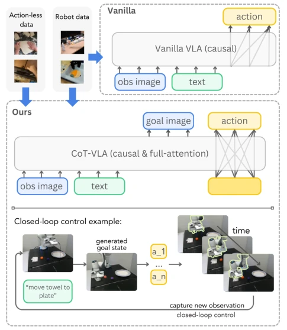
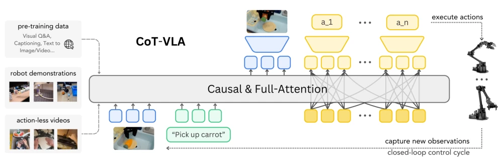
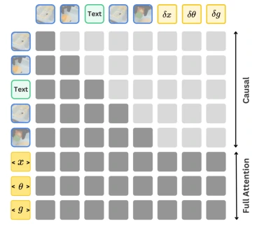
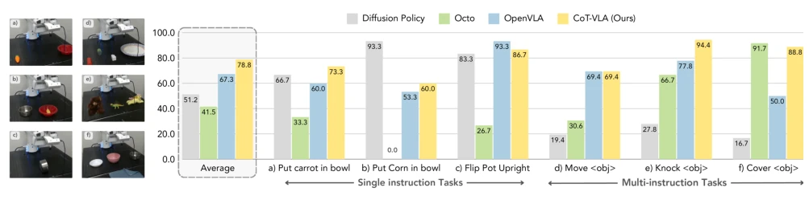
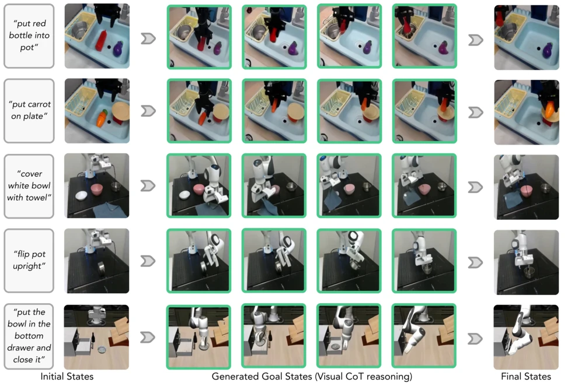
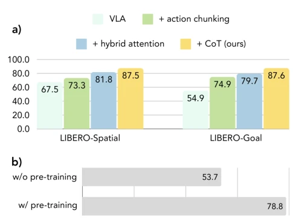

This paper adds a "visual imagination" function to VLA models, attempting to solve planning problems using Chain-of-Thought. CoT-VLA no longer naively outputs actions directly, but instead first draws a "target image" before acting. This approach indeed makes the model perform better on LIBERO and real robots, especially for multi-instruction tasks, with success rates significantly higher than OpenVLA. But to be honest, this image generation step is too slow, inference speed drops directly to 1/7 of the original, simply "thinking too much leads to slow hands", real-time control may be affected. Moreover, the quality of generated subgoal images is not as good as dedicated diffusion models, somewhat incongruous. Although the authors say this is reasoning, essentially it is still predicting future frames, whether it can truly improve generalization depends on the data scale. However, utilizing action-unlabeled video data is a highlight, at least saving annotation. Overall, this is an attempt at a trade-off between performance and efficiency, suitable for offline or slow tasks, real-time performance remains a fatal flaw.
Existing VLA models (such as OpenVLA [29]) mostly adopt end-to-end direct mapping, lacking intermediate reasoning steps, leading to insufficient complex task planning ability, easily ignoring language instructions. Although Chain-of-Thought (CoT) [62] in the language field has been proven to improve reasoning ability, its application in embodied intelligence is still shallow. Existing work mostly uses text plans [44, 45] or keypoints [63] as intermediate representations, but these often require additional preprocessing or abstraction, and are difficult to utilize rich video data. CoT-VLA aims to introduce explicit visual CoT, utilizing subgoal images as intermediate reasoning steps. This not only allows the model to "think before acting", enhancing interpretability, but also utilize a large amount of action-unlabeled video data (e.g., EPIC-KITCHENS [27]) to enhance visual understanding, solving the problem of existing VLA overly relying on action-annotated data, unlocking the potential of unlabelled video data.

Figure 1. Comparison between vanilla VLA and CoT-VLA frameworks. Prior VLA models (top) directly predict robot ac- tions from task inputs without explicit reasoning steps and only use action-annotated robot demonstration data for training. Unlike vanilla VLAs, CoT-VLA (bottom) can also leverage action-less datasets like EPIC-KITCHEN-100 [27] to enhance subgoal image generation ability, unlocking the potential of using abundant un- labeled video data to improve VLA’s visual reasoning capability. CoT-VLA first generates a subgoal image as an intermediate rea- soning step, and then generate a short action sequence to achieve the subgoal. We outline the robot arm for better visualization.
CoT-VLA is built based on VILA-U [67], adopting two-stage training: pretraining combining robot demonstrations and actionless videos, downstream task fine-tuning. The core process is divided into two steps: First, the model generates future subgoal images (subgoal image) via causal attention based on current observations and instructions, as a visual reasoning step; Second, based on current observations and generated subgoal images, utilize full attention (full attention) to predict action sequences (action chunking). This mixed attention mechanism allows action dimension parallel decoding, while image generation remains autoregressive. Training objectives include visual token prediction loss and action token prediction loss. Action dimensions are discretized into 256 bins, reusing text tokenizer tokens. Compared to traditional VLA directly predicting actions, this method explicitly introduces pixel-level intermediate states, enabling the model to utilize actionless video data to learn dynamics and instruction following, extracting visual reasoning capabilities from video data without additional preprocessing, improving the robustness of the policy.

Figure 2. Overview of CoT-VLA framework. We build our model on VILA-U [67], a generative multimodal model pretrained on interleaved text–image data. The base model then trains on robot demonstrations [48] and action-less videos [20, 27]. During deployment, given a visual observation and a text instruction, the model performs visual chain-of-thought reasoning by generating a subgoal image (upper blue) with causal attention. It then generates a short action sequence with full attention (a1 · · · an) for robot execution. The system operates in a closed-loop control manner by capturing new observations after executing predicted action sequences.

Figure 3. Hybrid attention mechanism in CoT-VLA. We use causal attention for image or text generation and full attention for action generation. [x], [θ] and [g] are special tokens for parallel decoding of actions.
Experiments cover LIBERO simulation benchmark, Bridge-V2, and Franka-Tabletop real robot tasks. Comparison baselines include Diffusion Policy, OpenVLA, Octo, and SUSIE. Results show CoT-VLA has the highest average success rate on LIBERO, real-world tasks are 17% better than OpenVLA. Ablation experiments show that visual CoT, mixed attention, and action chunking all effectively improved performance. Especially introducing actionless video data in the pretraining stage brought a 46.7% relative improvement on Franka-Tabletop. But the authors also admit that generating subgoal images causes inference speed to drop 7 times, and image quality is not as good as diffusion models. Using real subgoal images can significantly improve success rate, proving visual reasoning ability is directly linked to task performance. On Bridge-V2, although visual generalization is slightly lower, overall performance remains competitive, validating the method's effectiveness.

Figure 4. Franka-Tabletop comparisons. Evaluation across six distinct manipulation tasks, with separate models trained per task. Left: Representative initial states for each task setup. Right: Task-specific success rates and cross-task averages for our method and baselines. CoT-VLA achieves best average performance and demonstrates strong capabilities in both single-instruction and multi-instruction scenarios.

Figure 5. Task execution examples for LIBERO, Bridge-V2, and Franka-Tabletop using CoT-VLA. For each task: Left: text instruction (l) and initial state (sobs 0 ). Middle: generated intermediate goal states (ˆst) demonstrating visual chain-of-thought reasoning, where each goal image is conditioned on both the instruction and the most recent observation. Right: final state (sobs T ) upon task completion. Complete execution trajectories are available in the supplementary video.

Figure 6. Ablation studies of CoT-VLA components. a) Results on LIBERO-Spatial and LIBERO-Goal benchmarks demonstrate the effectiveness of three components: action chunking, hybrid attention, and visual chain-of-thought reasoning. b) Pretraining ab- lation experiments on Franka-Tabletop show performance improve- ments from the OpenX and action-less video pretraining process.